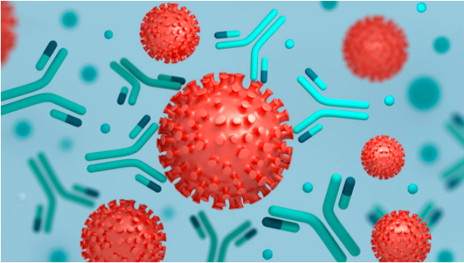
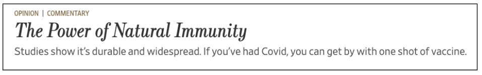
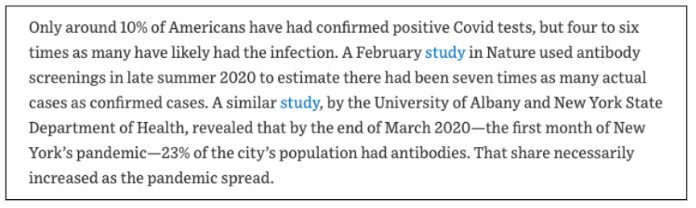

| BIOLOGY | |
| Alternate News or COVID Conspiracies? “The Power of Natural Immunity” by Anya Sithambaram '23 | |
| An extremely engaging and thorough piece of writing that evaluates the titular article, and its biological/scientific accuracy, as well as its role in our world today, complete with a strong voice throughout.
|
|
|  | Anya Sithambaram '23 |
|
Living in the Information Age, it can be difficult to distinguish between news and misinformation, especially in the midst of a pandemic that brings rapidly advancing scientific discovery and political change like never before. Therefore, after stumbling upon a regularly updated list of COVID-19 related “News” on a rather shady looking website, I’ve set off to determine how much truth there actually is in what some regard as “alternate news” but others consider to be “conspiracy theories”. In this article, I’ll be scrutinising “The Power of Natural Immunity”, an article that presents post-infection COVID-19 immunity as widespread in the US, therefore dismissing the need for the vaccination of people who have already recovered from COVID-19. The general tone also hints that the COVID-19 situation in the US is actually better than it is presented in the media and by the government.

Before we dive into the article itself, let’s examine the context a little. It is written by Marty Makary and published on the “Opinion” page of The Wall Street Journal. Although established and well-known for their publication of business and financial news, “The Journal editorial board has promoted views that differ from the scientific consensus on climate change, acid rain, and ozone depletion, as well as on the health harms of second-hand smoke, pesticides and asbestos”, which makes one question its credibility on subjects like public health and herd immunity. However, when we take a look into the author himself, we find that Dr Marty Makary is a professor at the Johns Hopkins Bloomberg School of Public Health, and authored an award-winning book among the multitude of other achievements he has under his belt. So perhaps he actually has a valid and informed point to make about natural immunity in this article. Digging deeper, though, we find that Dr Makary’s views have previously clashed with the general public’s on a few occasions. Another one of his articles, “We’ll Have Herd Immunity by April”, was flagged by Facebook fact-checkers for being “misleading”, alleging that his arguments were “unsubstantiated”. The Wall Street Journal later lashed back at the fact-checkers, claiming they relied on “opinions and not facts”. So, who is to be believed, Dr Makary or the Facebook fact-checkers? Unsatisfied by simply reading about this dispute from third-party news sources, I decided to do my own fact-checking. In “The Power of Natural Immunity”, Dr Makary claims in the article description that natural immunity is “durable and widespread”. In terms of durability, this section from the conclusions of a study published by the CDC sums up my findings in a rather scientifically-worded nutshell: “In this study, we confirmed that rates of antibody positivity according to 3 commercial kits was still high at 8 months after infection, even in asymptomatic or mildly symptomatic participants (69.0%–91.4%). Rates differed according to immunoassay methods or manufacturers, thereby explaining differences in rates between the studies [two studies cited]. A previous study argued that among asymptomatic persons who had been antibody positive early in the infection, 40% became antibody negative in 2–3 months, even when tested by chemiluminescence immunoassay (CLIA); however, their results are in stark contrast to ours, which may have resulted from variations in the characteristics of CLIA products from different manufacturers.”Too long, didn’t read? Essentially, the researchers measured the antibody levels in patients who had recovered from COVID-19 to determine how long their immunity lasts post-infection. Antibodies are a good indicator of immunity because they are produced by the body during infection to fight the virus, and some antibodies (like memory cells) remain in the blood even after recovery, so the immune response will be initiated more quickly if the patient is reinfected, hence providing immunity. In the study above, they tested 58 people for antibodies 8 months after symptomatic or mildly symptomatic COVID-19, and found that the vast majority of them retained their antibodies, which supports Dr Makary’s point on the durability of natural immunity. However, they then go on to explain how two other similar studies obtained starkly different results, one of which showed a very much reduced antibody presence after only two to three months. The researchers suggested that this difference is a result of variations in the characteristics of antibody test kits from different manufacturers, even though they took care to use the same method of testing. Given these discrepancies, how are we to know which studies are valid and which are not? Due to this, I would consider Dr Makary’s point -“there’s ample scientific evidence that natural immunity is effective and durable”- to be misleading if not downright false. In case you are not convinced of the weakness of the scientific evidence in his favour, consider this: “it’s not simply the presence or absence of antibodies that matter; rather,the amount and type of antibodies that may play a defining role in the development of a protective immune response.” So just because some studies show that many people retain their antibodies 8 months after infection, it doesn’t mean that there will be enough of them, or the right type to provide lasting immunity, meaning we are still unclear about how long “effective” immunity really lasts. Even so, there are other studies that do not depend on the testing of antibodies to show that reinfection is rare for those who have already recovered from COVID-19. One example of this is a study in Denmark (which is cited by Dr Makary later in the article) that compared the infection rates during the second COVID-19 surge of people who had tested positive and negative in the first surge. The study showed that, of the 11,068 people who tested positive during the first surge, only 72 (0.65%) of them tested positive again during the second surge. Comparing that to the 514,271 people who tested negative during the first surge, 16,819 (3.27%) of them tested positive during the second surge, which shows a protection against repeat infection of 80.5% for those who tested positive during the first surge, meaning those who had COVID-19 in the first surge were greatly protected from catching it again in the second surge. For comparison, 80.5% is higher than Sinovac’s vaccine efficacy against mild disease, so it makes solid evidence that post-infection immunity does indeed effectively protect an individual from future infection. On the other hand, the two surges in Denmark were only around 5 months apart, so it doesn’t prove much in terms of lasting immunity. It also does not shed much light on the newer variants of the virus because the data used was from March to December of 2020. Alright, so perhaps Dr Makary has a semi-sound point about the power of post-infection immunity in preventing reinfection, but is natural immunity really as widespread as he claims? In the article, he cites two studies (both of which I have read through and confirmed are legitimate; furthermore, all publications on Nature are peer-reviewed and so are most articles on PubMed so it’s all above board) that show COVID-19 infection rates in the US are significantly higher than the reported numbers. In addition, both the New York study and the California study were done in 2020, so there is a great likelihood that cases slipping under the radar have increased due to the more transmissible variants that have arisen since then. So, to his point, a substantial number of Americans do, in fact, already have natural immunity to at least the original strain of COVID-19.

Of course, there are many other points that are made in Dr Makary’s article, one that argues that one dose of vaccine is sufficient for those who have been previously infected by COVID-19 for example, but unfortunately I don’t have the time to cover them in this article. So, with what we have learnt above, let’s examine the ultimate message of “The Power of Natural Immunity”: “What's the harm of underestimating or disregarding the protection afforded by natural immunity? It almost certainly cost American lives by misallocating vaccine doses earlier this year, and is still doing so in countries where Covid is prevalent and shots are scarce. It continues to delay full reopening and prolongs the state of fear that has many people wearing masks even when there's no mandate, or reason, to do so.”All in all, despite some slightly dubiously worded arguments and mildly controversial views, I have come to be of the opinion that Dr Makary’s point in this article is a fair and important one. As we have seen, it is true that studies have shown the prevalence and effectiveness of natural immunity against COVID-19, although there are still gaps and discrepancies that leave room for conjecture. However, in a rapidly evolving pandemic situation, leaders are forced to make decisions for the good of the public based on whatever data they can get hold of, as little as is sufficient to safely prove a point, because waiting on a fully complete jigsaw to fall into place could take years or even decades. Misallocation of vaccines is no small matter, especially with their limited availability due to the incredibly high demand all around the world. Therefore, I think when Dr Makary’s point is put into this context, it makes it much more relevant and important to consider. I won’t deny that I am surprised at how much indisputable fact there is in this article, despite my efforts to disprove Dr Makary’s arguments. Initially classing the article as a potential “conspiracy theory” candidate due to it being posted amongst other suspicious looking articles in a hidden corner of that rather shady looking website, I was drawn to taking a closer look because of the plausibility of his argument at first glance. And in the end it turned out that many, if not most, of his points and evidence were in fact scientifically valid, from reputable sources and journals, and indeed an interesting and important side to take on vaccine rollout both in the US and globally. My verdict on “The Power of Natural Immunity”: Alternate News. |
LIKE 👍 |
|
Leave a like or comment here! |